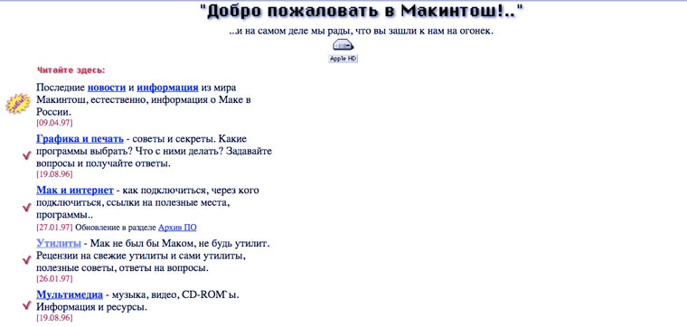

Развитие сайтов
История развития сайтов начинается в 1990-х годах, когда интернет только начал набирать популярность. В то время сайты были простыми и состояли из нескольких статических страниц, содержащих информацию о компании или организации.
С развитием технологий и появлением новых возможностей, сайты стали более интерактивными и функциональными. В конце 1990-х годов появились первые динамические сайты, которые позволяли пользователям взаимодействовать с контентом и выполнять определенные действия, такие как отправка форм или комментариев.
В начале 2000-х годов сайты стали более сложными и многофункциональными. Появились сайты электронной коммерции, блоги, форумы и социальные сети. Также стало популярным создание сайтов на основе управления контентом (CMS), которые позволяют пользователям легко создавать и обновлять контент без необходимости знания программирования.

С развитием мобильных устройств и увеличением числа пользователей, посещающих сайты с мобильных устройств, стала актуальной адаптация сайтов к мобильным платформам. В 2015 году Google ввел алгоритм, который придает приоритет мобильно-оптимизированным сайтам в результатах поиска, что привело к увеличению числа адаптивных сайтов
С появлением новых технологий, таких как HTML5, CSS3 и JavaScript, сайты стали более интерактивными и эстетически привлекательными. Также стало популярным использование анимаций и видео на сайтах.


В настоящее время развитие сайтов продолжается, и появляются новые тенденции и технологии. Например, одной из актуальных тенденций является разработка Progressive Web Apps (PWA), которые объединяют преимущества веб-сайтов и мобильных приложений.
Также становится все важнее обеспечение безопасности сайтов и защита от кибератак. Появляются новые методы защиты, такие как шифрование данных, двухфакторная аутентификация и использование защищенных протоколов передачи данных.
История развития сайтов свидетельствует о постоянном развитии и совершенствовании веб-технологий. Сайты становятся все более функциональными, интерактивными и удобными для пользователей, а разработчики постоянно ищут новые способы улучшения пользовательского опыта и эффективности сайтов.
Возможно, в будущем сайты могут измениться и претерпеть значительные изменения, но вряд ли они полностью исчезнут. Сайты являются основным средством представления информации в интернете, и они по-прежнему будут использоваться для коммуникации, продажи товаров и услуг, обмена информацией и других целей. Однако форматы и технологии сайтов могут измениться в соответствии с развитием новых технологий и требований пользователей. Например, с развитием виртуальной и дополненной реальности возможно появление сайтов, специально адаптированных для этих технологий. Также возможно усиление роли мобильных приложений, которые могут заменить некоторые функции сайтов. Однако, в целом, сайты останутся важным инструментом в интернете и будут продолжать развиваться и приспосабливаться